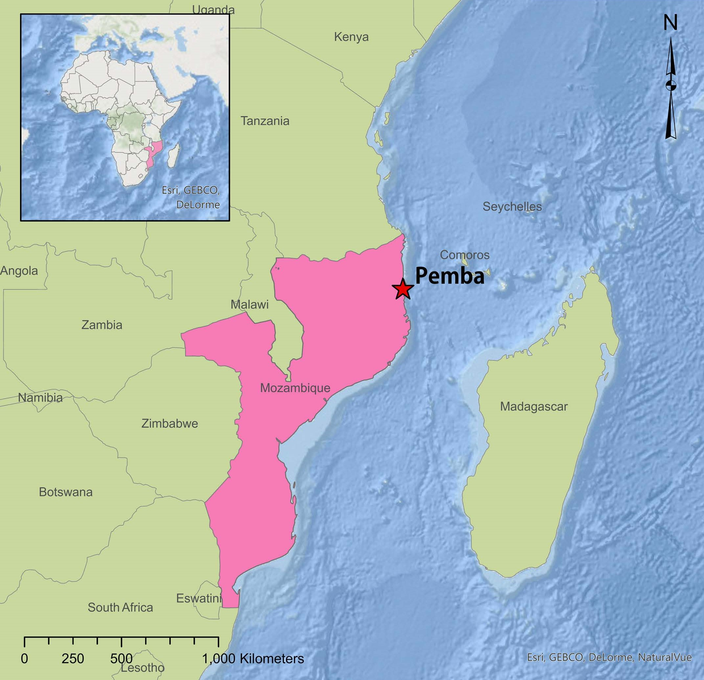
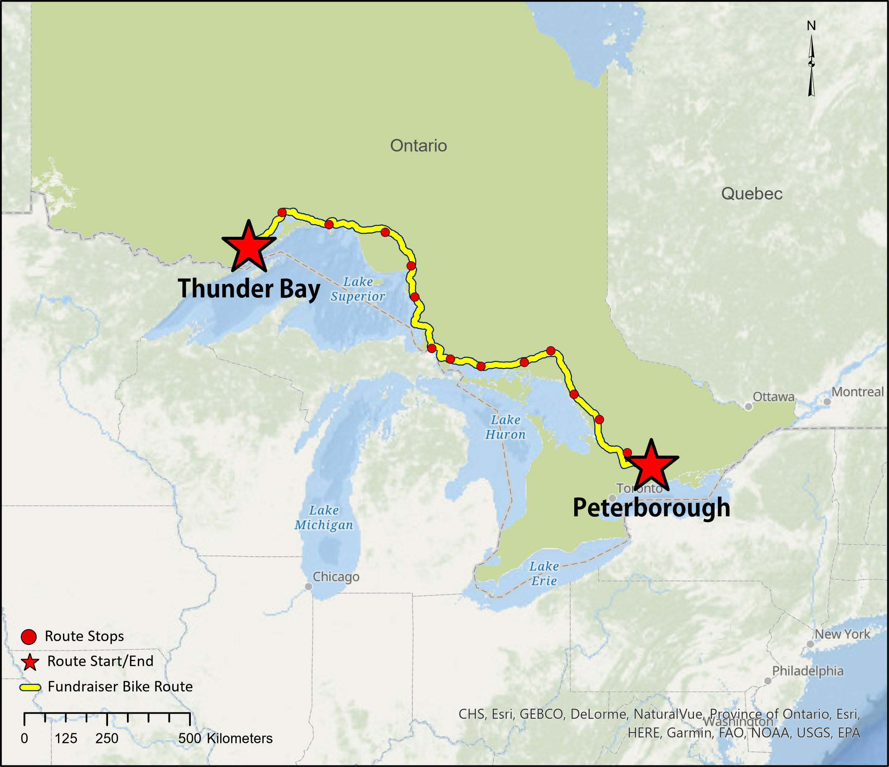

The Liberty Project is a non-profit in Pemba, Mozambique. Mozambique is located on the southeast coast of Africa and Pemba is a port city located in northeastern Mozambique. The established non-profit works to raise awareness and support for the women of Pemba who have been sexually exploited, abused, and culturally oppressed.

would love to see the pic of smiling women we used in the presentation here
The project was brought to the team in response to the Client planning a new fundraising initiative, a bike fundraiser for August 2021 in order to raise funds for the charity and continue to support the women of Pemba, Mozambique. Although The Liberty Project is based out of Pemba, Mozambique, the bike fundraiser is being hosted in Ontario as the Chair of the charity, is based out of Ontario, Canada and is the lead for the fundraising event.
The Liberty Project required an event platform to increase awareness about their fundraising bike-a-thon event to encourage donations and registration, and develop a database for donor and registrant information, all which work towards supporting the non-profit and the affected women in Mozambique. The team at Vanritto developed a two-part solution using open source and existing Client software: (1) an interactive event page integrated into The Liberty Project’s website including a storytelling map of the event bike route, the ability to donate and register to the event, live tracking of participants, and the organization’s social media for live updates and (2) a database system to manage donor and participant information.
